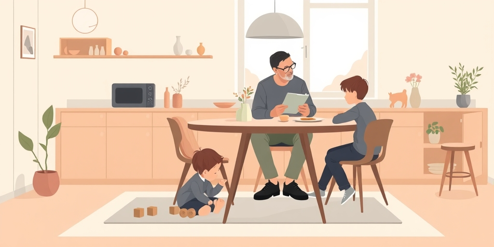
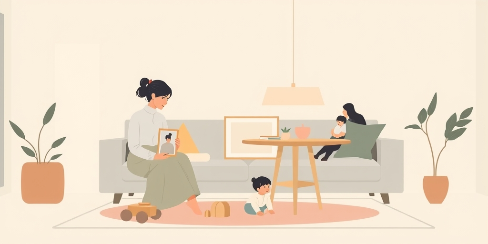
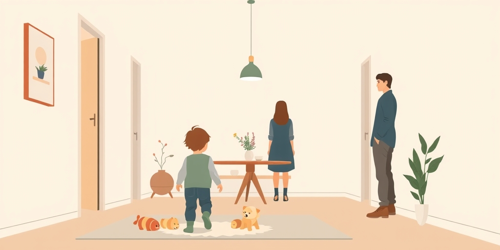
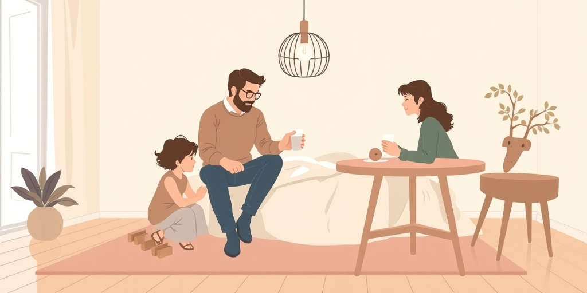

小汪老师的成长洞察 · 属于你的成长专栏
你以为在心疼孩子，其实在哀悼自己的付出。当孩子的挫折刺痛你时，先问问，那份痛里，有多少是孩子的，又有多少是你自己的。

印度导演大卫·达万说，儿子瓦伦的第一部电影失败时，他自己陷入了抑郁。这件事听起来有点奇怪。电影是儿子拍的，票房是市场定的，父亲怎么会“抑郁”呢？
但很多家长瞬间就懂了。我们辅导作业到深夜，为孩子升学焦虑失眠，把他们的奖状和成绩单看得比自己的工作报告还重。这些付出，早已把我们自己和孩子的成败捆在了一起。孩子的失败，不再是单纯的事件，而成了对我们自身投入的一次否定。那份心痛，根源在于我们自己。

心理学有个概念叫“自我延伸”。我们将自己的身份、价值和未完成的梦想，部分地寄托在了孩子身上。他们的成功，是我们的勋章；他们的失败，仿佛是我们人生的败笔。那位印度导演的抑郁，正是自我延伸过深的结果。
这种延伸很隐蔽。我们觉得这是爱，是责任。我们为孩子规划的路径里，藏着我们当年没走成的路。我们对孩子成绩的愤怒里，夹杂着对自己未能提供更好条件的愧疚。于是，孩子的一次考试失利，就足以引爆我们内心积压多年的复杂情绪。这早已不是简单的“为孩子好”。

问题来了。当父母为孩子的失败痛苦不已时，孩子会接收到什么信号？他们会觉得：“我的失败，伤害了我最爱的人。”这比失败本身更可怕。孩子从此背负上双重重担：处理自己的挫折，还要安抚父母的情绪。
有些孩子会变得不敢尝试，因为害怕再次让父母失望。有些孩子则学会了报喜不报忧，亲子之间的信任悄然裂开一道缝。父母的“心疼”，成了孩子自由成长路上一道无形的玻璃墙。他们要成功的意义，从“实现自我”变成了“不让父母伤心”。

所以，下次当孩子的成绩单或比赛结果让你心头一紧时，请先做一个动作：暂停。感受一下那份痛在身体的哪个位置。然后问自己：这份痛，是纯粹为孩子的遭遇，还是夹杂着对自己的失望、恐惧或焦虑？
承认这份属于你自己的情绪。你可以对伴侣说：“看到孩子这样，我挺难过的。”这是对自己的诚实。但不必把这份情绪原封不动地抛给孩子。你可以说：“这次没考好，你肯定也不好受。需要聊聊吗？”把焦点拉回到孩子本人和他的感受上。
给家长的小提示
真正的支持，是让孩子知道：无论他飞得多高或跌得多惨，身后都有一个情绪稳定、不会因他成败而摇晃的港湾。你更害怕孩子失败，还是害怕那个面对失败的自己？
这个问题值得你在夜深人静时，好好问问自己。
参考资料
[1] Why child’s failure hurts parents deeply: What David and Varun Dhawan’s candid conversation reveals (The Indian Express) https://indianexpress.com/article/people/why-childs-failure-hurts-parents-deeply-what-david-and-varun-dhawans-candid-conversation-reveals-10708607/
[2] Puberty may hide rising anxiety in children as parent awareness lags (Medical Xpress) https://medicalxpress.com/news/2026-05-puberty-anxiety-children-parent-awareness.html
小汪老师的成长洞察 · 属于你的成长专栏